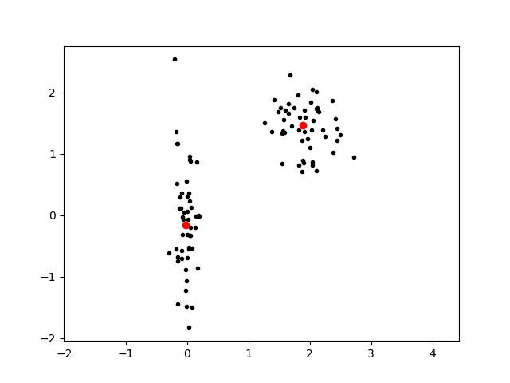

scipy.cluster
scipy.cluster module
vq.kmeans
n_points = 50
points1=[rand(Normal(0.0, 0.2), n_points) rand(Normal(0.0, 1.0), n_points)]
points2=[rand(Normal(3.0, 0.5), n_points) rand(Normal(2.0, 0.5), n_points)]
points=[points1; points2]
whitened = cluster.vq.whiten(points)
codebook, distortion = cluster.vq.kmeans(whitened, 2)
plot(whitened[:, 1], whitened[:, 2], ".k")
plot(codebook[:, 1], codebook[:, 2], "or")
axis("equal")Unable to create basic Accelerated OpenGL renderer. Unable to create basic Accelerated OpenGL renderer. Core Image is now using the software OpenGL renderer. This will be slow.
